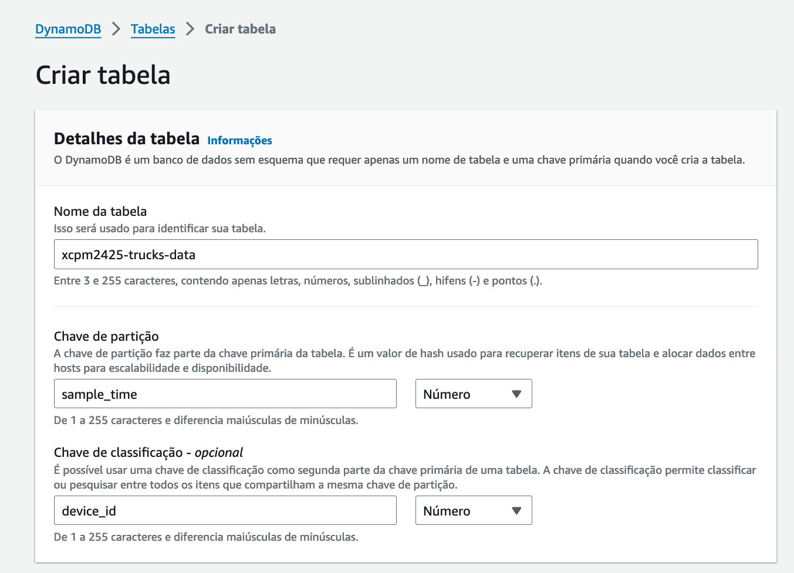
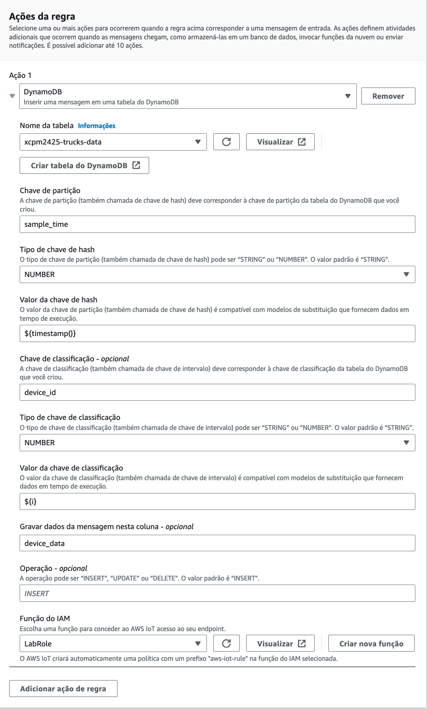
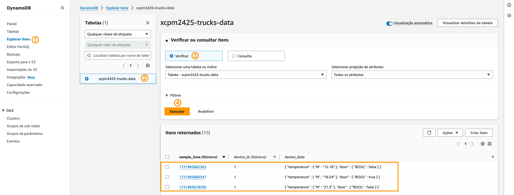
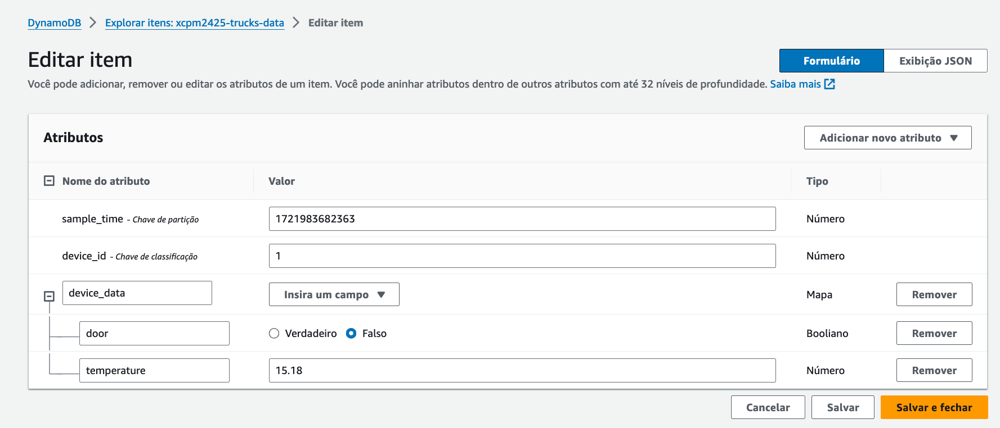

Actividade 2
CREAR UNHA REGRA PARA GARDAR DATOS EN DYNAMODB.
Obxectivo
O obxectivo desta actividade é crear unha regra AWS IoT que envíe os datos das mensaxes de telemetría recibidas desde o dispositivo IoT (o camión) a unha táboa DynamoDB.
Creación da táboa DynamoDB
A táboa vai conter os seguintes atributos:
sample_timea hora en que a mensaxe foi rexistrada.device_ididentificador do camión que transmitiu a mensaxe.device_datacontido da mensaxe formatado pola instrucción SQL da regra.
Para crear a táboa fai o seguinte:
- Abre a consola de DynamoDB e escolle a opción Crear táboa.
-
No asistente de creación da táboa indica as opcións seguintes:
- Nome da táboa: trucks-data. Lembra poñer o teu prefixo diante, p.ex. xcpm2425-trucks-data.
- Chave de partición: sample_time de tipo Número.
- Chave de clasificación: device_id de tipo Número.
Nota
device_data definirase posteriormente, cando se configure a acción da regra AWS IoT.
 Imaxe: configuración da táboa DynamoDB.
Creación da regra AWS IoT
A regra vai filtrar e formatar os datos das mensaxes de telemetría recibidas desde o camión e os vai gravar na táboa de DynamoDB.
A carga útil (payload) dunha mensaxe contén a seguinte información:
{
"uptime": "43",
"volts": "12.08",
"temp": "15.18",
"door": "0",
"i": "1",
"n": "15",
"timestamp": 1721929699.2319772
}
A regra vaina converter ao formato seguinte que será o gravado na táboa:
{
"temperature": "15.18",
"door": "0"
}
Na regra vamos usar modelos de substitución, que son expresións que permiten inserir valores dinámicos de funcións e datos de mensaxes.
Para criar a regra AWS IoT fai o seguinte:
- Abre a consola AWS IoT e dentro do submenú Roteamento de mensaxes escolle a opción Regras.
-
Crea unha nova regra escollendo Crear regra e indicando as opcións seguintes:
- Nome da regra: truck2ddb. Lembra poñer o teu prefixo diante. Usa o caracter de suliñado para separalo do nome, xa que non se permiten guións, p.ex. xcpm2425_truck2ddb.
- Descrición: pon unha descrición para a regra.
-
Instrucción SQL:
SELECT cast(temp AS DECIMAL) AS temperature, cast(door AS BOOLEAN) AS door FROM 'truck/freezer'Nota
Esta instrucción selecciona os atributos temp e door das mensaxes recibidas no tópico
truck/freezer, interpreta os seus valores co tipo de dato que lles corresponde e renomea temp como temperature e door deixao co mesmo nome. -
Accións da regra: na acción 1 escolhe DynamoDB. Nos campos que aparecen indica o seguinte:
- Nome da táboa: escolle trucks-data.
- Chave de partición: insire sample_time.
- Tipo de chave de partición: escolle NÚMERO.
- Valor da chave de partición: insire
${timestamp()}. Esta expresión usa un modelo de substitución para obtér o tempo actúal usando a función timestamp. - Chave de clasificación: insire device_id.
- Tipo de chave de clasificación: escolle NÚMERO.
-
Valor da chave de clasificación: insire
${i}.Note
Esta expresión usa un modelo de substitución para tomar o valor do campo
ida mensaxe como ID do dispositivo. Unha alternativa común é que os ID dos dispositivos se inclúan nos nomes dos tópicos MQTT, p.ex.truck/id/freezer. Nese caso a expresión a usar sería:${cast(topic(2) as DECIMAL)}, que toma o valor do nivel 2 no nome do tópico e o convirte a un valor numérico. -
Gravar os datos da mensaxe nesta columna: insire device_data. Iso creará unha columna device_data na táboa do DynamoDB para almacenar a mensaxe unha vez procesada pola regra.
- Rol do IAM: escolle o rol predefinido LabRole. Este rol xa ten os permisos precisos para que a regra envíe os datos á táboa DynamoDB.
 Imaxe: configuración da acción.
Proba da regra AWS IoT
Para probar o funcionamento da regra fai o seguinte:
- Nun terminal do ambiente Cloud9 executa o script start.sh.
- No cliente MQTT da consola de AWS IoT subscríbete ao tópico
truck/freezere comproba que se reciben mensaxes desde o dispositivo IoT. -
Nunha xanela diferente á do cliente MQTT, abre a consola de DynamoDB, e fai o seguinte:
- Escolle a opción Explorar Items no menú lateral e selecciona a táboa trucks-data.
- Coa opción Verificar escollida, preme no botón Executar e comproba as entradas que a acción DynamoDB da regra inseriu na táboa.
 Imaxe: entradas inseridas na táboa DynamoDB.
- Preme no valor do sample_time dunha das entradas para abrila no editor de entradas. Desde o editor é posíbel modificar os valores dos atributos da entrada e dos campos da carga útil da mensaxe, así como engadir e eliminar atributos e campos.
 Imaxe: entrada da táboa DynamoDB no editor de entradas.
- Preme no botón Ver como JSON que está na parte superior dereita para ver a entrada en formato JSON.
- Na vista JSON activa/desactiva o conmutador para cambiar entre o formato JSON normal e o de DynamoDB. Comproba as diferenzas.
Exemplo
Por exemplo, a entrada en JSON
{
"sample_time": 1721983656138,
"device_id": 1,
"device_data": {
"door": false,
"temperature": 21.82
}
}
veríase no formato JSON do DynamoDB como
{
"sample_time": {
"N": "1721983656138"
},
"device_id": {
"N": "1"
},
"device_data": {
"M": {
"door": {
"BOOL": false
},
"temperature": {
"N": "21.82"
}
}
}
}
onde como pode verse, cada valor é precedido dunha chave que indica o seu tipo.
- Para rematar a proba preme
Ctrl+Cno terminal do ambiente Cloud9 no que estexa a executarse o script start.sh.
Xustificación da actividade
Toma as seguintes capturas para a memoria de xustificación da práctica:
- Na consola do DynamoDB as propiedades da táboa trucks-data.
- Na consola IoT as propiedades da regra truck2ddb e os detalles da acción DynamoDB.
- Ambiente Cloud9 no que se vexa a saída do terminal no que se executou o script start.sh.
- Na consola do DynamoDB o explorador de items no que se vexan as entradas inseridas na táboa trucks-data.
Importante
As capturas teñen que asemellarse ás que se tomaron no curso e na práctica 1. As capturas tomadas na consola AWS teñen que incluír o menú superior no que poida verse o nome de usuario da conta.